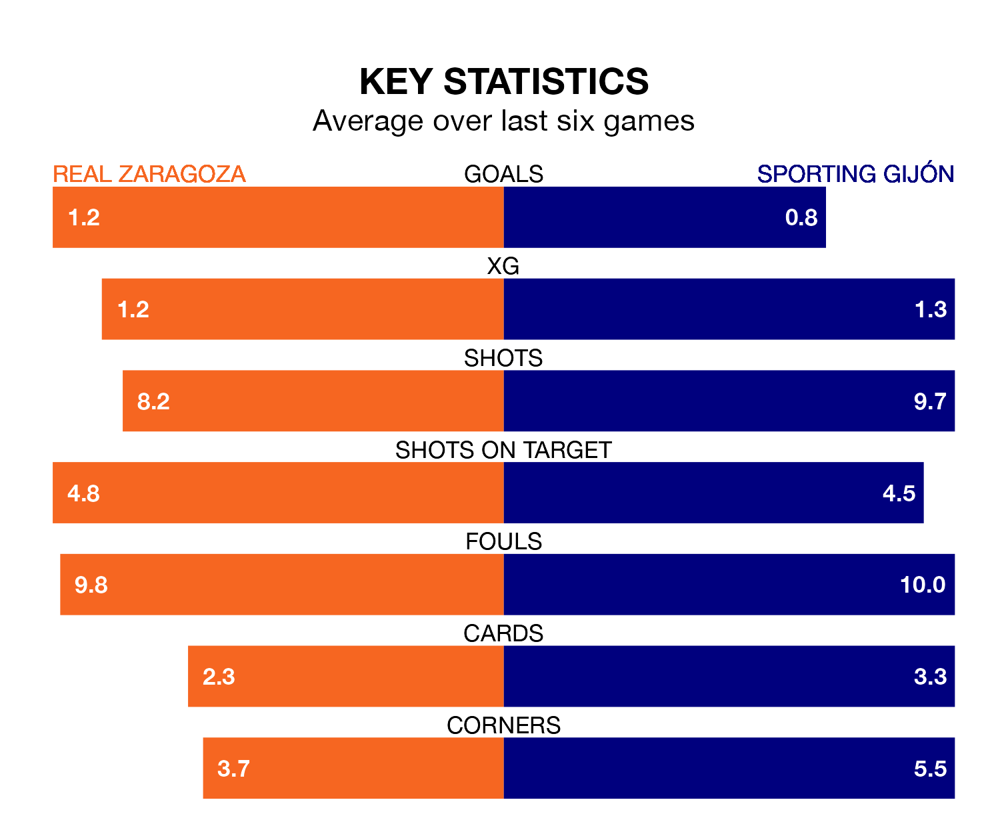

Sporting Gijón travel to Estadio de la Romareda for Monday's late match against Real Zaragoza looking to bounce back from defeat last time out in the Segunda División.
Sporting, who sit fourth in the league after 24 games, fell to a 2-1 home defeat to Racing Club de Ferrol on January 28.
They face a Zaragoza side who secured a draw in their last match, a 0-0 tie with AD Alcorcón, and who sit 11th in the table.
In Orlando Rubén Yáñez Alabart, Sporting can rely on one of the league's safest pair of hands. He has kept 11 clean sheets in his 24 appearances this season, and no 'keeper has prevented the opposition scoring more often in the Segunda División.
In Zaragoza's net, Cristian Darío Álvarez has five clean sheets in 10 games.
In the last 10 years, Zaragoza and Sporting have played each other on 16 occasions. Zaragoza won eight of them, Sporting four, and they drew four times.
On average, Zaragoza scored 1.3 goals and Sporting 1.1 in those matches.
Their last meeting was on October 14, when they played out a 2-2 draw.
With 24 goals in 24 games so far this season, the home team are scoring at below the league average rate with 1.0 goals per game. But they are conceding fewer than average too, letting in 22 goals at a rate of 0.9 per game.
The visitors, meanwhile, are average scorers, with 1.2 goals per game. They have conceded 0.8 goals per game.
Zaragoza are in mixed form in the Segunda División, with one win and five draws from their last six games.
With a win and four draws over that period, Sporting's form is slightly worse – they have taken seven points from 18, compared to Zaragoza's eight.
Monday's match will be refereed by Saúl Ais Reig, who has taken charge of 12 Segunda División games so far this season, issuing one red card and booking 55 players. He has awarded three penalties.
The last Zaragoza game Ais Reig refereed was a 3-1 away win against FC Cartagena on September 10. He is yet to oversee a match featuring Sporting this season.
Updated: 15:45 (UTC), 02/02/24